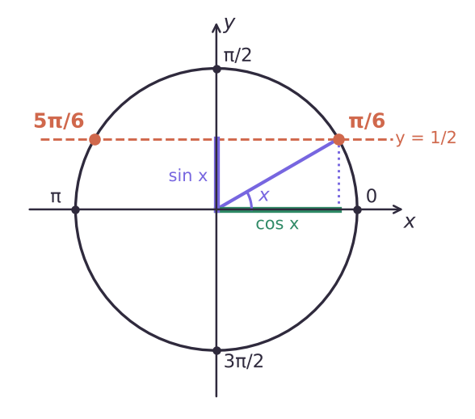
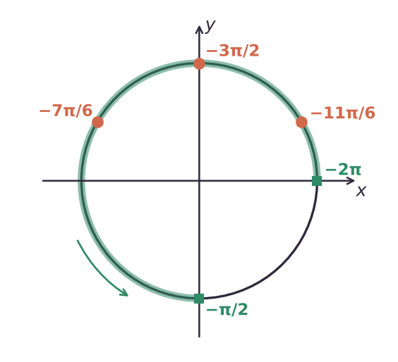

Как оценивают
Схема баллов — по образцу демоверсий последних лет; с финальной демоверсией 2027 года её нужно сверить.
| Баллы | Что сделано |
|---|---|
| 2 | обоснованно получены верные ответы в обоих пунктах |
| 1 | обоснованно получен верный ответ в пункте а), или получены неверные ответы из-за вычислительной ошибки при верной последовательности всех шагов решения обоих пунктов |
| 0 | всё остальное |
Опора: что нужно знать
Углы здесь измеряют в радианах: π рад = 180°, поэтому π2 = 90°, π3 = 60°, π6 = 30°. Синус и косинус угла x — это ордината (y) и абсцисса (x) точки единичной окружности (радиус 1, центр в начале координат), в которую переходит точка (1; 0) при повороте на угол x против часовой стрелки.

Если повернуть ещё на полный круг 2π, точка вернётся на место, и синус с косинусом не изменятся. Поэтому у тригонометрического уравнения обычно не один корень, а бесконечная серия корней.
k ∈ ℤ — «k — любое целое число» (…, −2, −1, 0, 1, 2, …). Запись x = π6 + 2πk означает все углы π6, π6 ± 2π, π6 ± 4π, …
arcsin a — угол из отрезка [−π2; π2], синус которого равен a; например, arcsin(12) = π6. arccos a — угол из [0; π], косинус которого равен a. arctg a — угол из (−π2; π2), тангенс которого равен a.
logₐ c — показатель степени, в которую нужно возвести a, чтобы получить c: log₂8 = 3, так как 2³ = 8. Логарифм определён только при c > 0 (основание a > 0, a ≠ 1).
Простейшие уравнения
| Уравнение | Корни |
|---|---|
| sin x = a, |a| ≤ 1 | x = (−1)ᵏ arcsin a + πk |
| cos x = a, |a| ≤ 1 | x = ± arccos a + 2πk |
| tg x = a | x = arctg a + πk |
| sin x = 0 / 1 / −1 | πk / π2 + 2πk / −π2 + 2πk |
| cos x = 0 / 1 / −1 | π2 + πk / 2πk / π + 2πk |
| aˣ = aᵇ | x = b |
| logₐ f(x) = b | f(x) = aᵇ, проверить f(x) > 0 |
Формулу для синуса удобно читать как две серии: x = arcsin a + 2πk и x = π − arcsin a + 2πk — на окружности две точки с одинаковой ординатой. Например, sin x = 12: x = π6 + 2πk и x = 5π6 + 2πk. Именно так записан ответ в примере 1.
Если |a| > 1, уравнения sin x = a и cos x = a корней не имеют: синус и косинус всегда лежат от −1 до 1. Это особенно важно после замены: если получилось sin x = 2 или cos x = −2, такой случай просто отбрасываем.
Методы
- Замена: 2sin²x − 3sin x + 1 = 0 → t = sin x, |t| ≤ 1; 4ˣ − 5 · 2ˣ + 4 = 0 → t = 2ˣ, t > 0 (4ˣ = (2ˣ)² = t²). Ограничения на t записывай сразу — по ним отбрасывают лишние значения.
- Формулы: cos 2x = 1 − 2sin²x = 2cos²x − 1; sin 2x = 2 sin x cos x; sin²x + cos²x = 1.
- Разложение на множители: произведение равно нулю ⇔ хотя бы один множитель равен нулю (а остальные при этом имеют смысл). Делить обе части на выражение с переменной нельзя: если оно может равняться нулю, вместе с ним потеряются корни (см. пример 2).
а) Решите уравнение 2sin²x − 3sin x + 1 = 0. б) Найдите его корни на отрезке [−2π; −π2].
а) Замена t = sin x, −1 ≤ t ≤ 1: 2t² − 3t + 1 = 0, D = 9 − 8 = 1, t = 3 ± 14 → t = 1 или t = 12 — оба подходят.
sin x = 1 → x = π2 + 2πk; sin x = 12 → x = π6 + 2πk или x = 5π6 + 2πk, k ∈ ℤ.
б) Перебираем k. k = 0: π2, π6, 5π6 — все больше −π2, вне отрезка. k = −1: π2 − 2π = −3π2, π6 − 2π = −11π6, 5π6 − 2π = −7π6 — все в отрезке [−2π; −π2]. k = −2: все корни меньше −2π, вне отрезка.
Ответ: а) π2 + 2πk, π6 + 2πk, 5π6 + 2πk, k ∈ ℤ; б) −11π6, −3π2, −7π6.
а) Решите уравнение sin 2x = √3 cos x. б) Найдите корни на отрезке [−π; π2].
а) По формуле sin 2x = 2 sin x cos x и переносим всё влево: 2 sin x cos x − √3 cos x = 0. Выносим общий множитель: cos x (2 sin x − √3) = 0.
cos x = 0 → x = π2 + πk; sin x = √32 → x = π3 + 2πk или x = 2π3 + 2πk, k ∈ ℤ.
б) Серия π2 + πk: k = −1 → −π2, k = 0 → π2 — оба в отрезке [−π; π2]; k = −2 и k = 1 дают −3π2 и 3π2 — вне. Серия π3 + 2πk: k = 0 → π3 — подходит; k = −1 → −5π3 < −π. Серия 2π3 + 2πk: k = 0 → 2π3 > π2; k = −1 → −4π3 < −π — корней нет.
Ответ: а) π2 + πk, π3 + 2πk, 2π3 + 2πk, k ∈ ℤ; б) −π2; π3; π2.
В примере 2 хочется разделить обе части на cos x — но тогда пропадёт серия x = π2 + πk: именно при этих x cos x = 0, а на ноль делить нельзя. Поэтому общий множитель выносим за скобки, а не сокращаем.
Отбор корней
- Перебор k: подставляем k = …, −1, 0, 1, … пока корни не выйдут за отрезок.
- Двойное неравенство: a ≤ x₀ + 2πk ≤ b → находим целые k.
- Окружность: отмечаем дугу отрезка и точки серий — видно, какие попадают.

Отберите корни серии x = π6 + 2πk, принадлежащие отрезку [−2π; −π2].
Шаг 1. Записываем условие попадания в отрезок: −2π ≤ π6 + 2πk ≤ −π2.
Шаг 2. Делим всё на π (π > 0, знаки не меняются): −2 ≤ 16 + 2k ≤ −12. Вычитаем 16: −136 ≤ 2k ≤ −23. Делим на 2: −1312 ≤ k ≤ −13.
Шаг 3. Целое k в этом промежутке одно: k = −1. Корень x = π6 − 2π = −11π/6 — как и в примере 1.
Подходит любой способ, но отбор должен быть виден в решении: перебор k с проверкой, двойное неравенство или окружность с отмеченной дугой и точками. Ответ без такого обоснования за пункт б) не засчитают, поэтому на отбор не жалко потратить пару лишних строк.
Задачи лекции
Задачи в формате ЕГЭ. Реши в тетради, ответ — число, как в бланке. Разберём на занятии.
Тест к лекции
Домашнее задание
Уравнения Д1–Д4 ниже — с полным оформлением, как на экзамене: пункт а), пункт б) с обоснованием отбора (перебор или окружность), ответ.